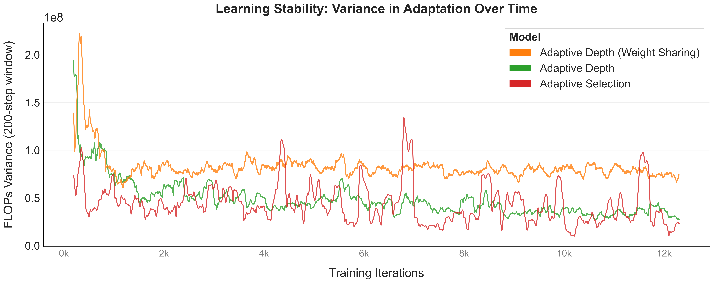
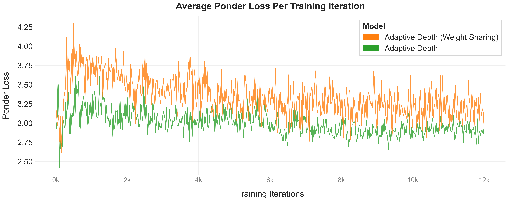
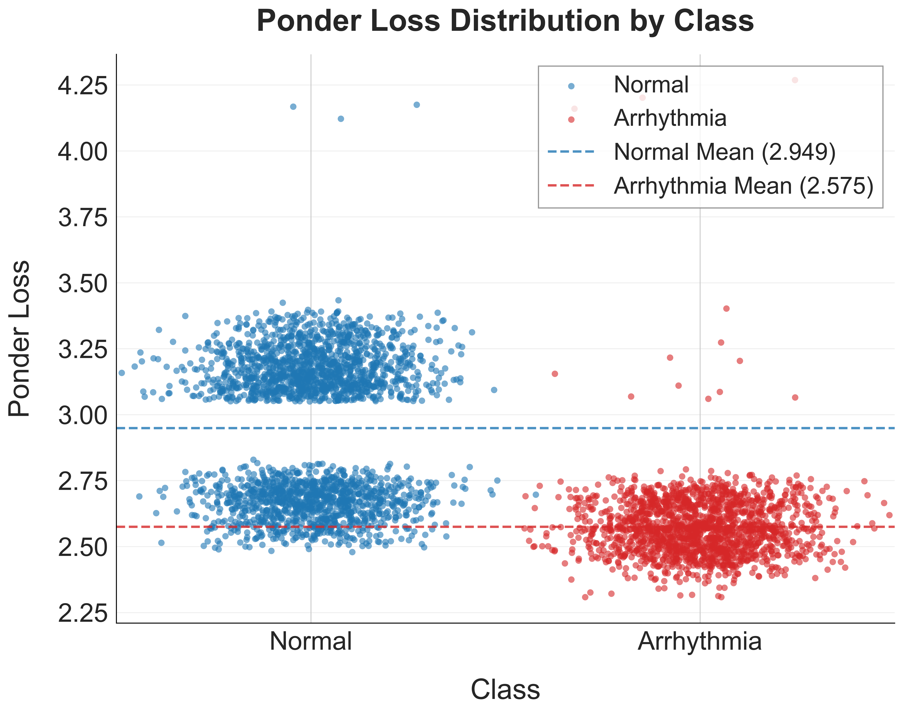
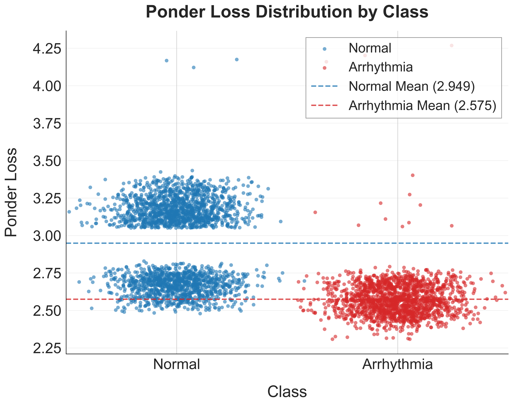
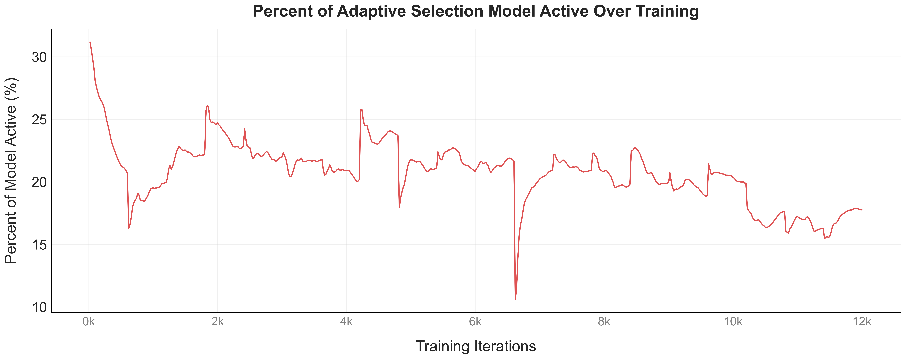
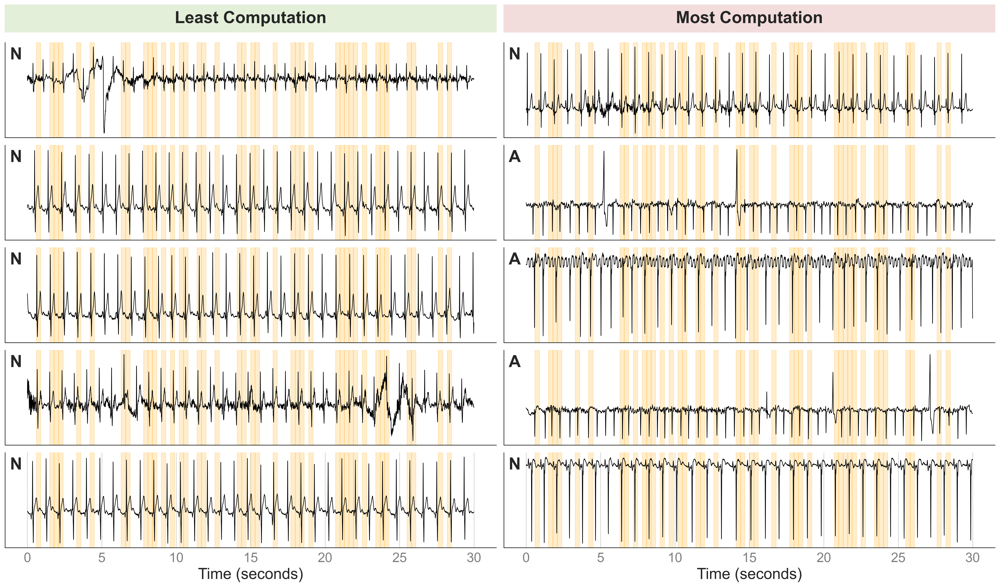
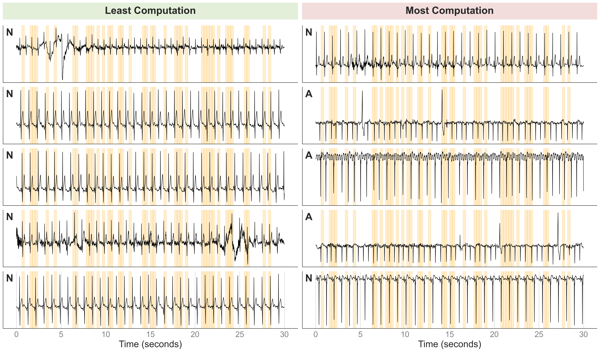

| Adaptive Computation Transformers for Efficient ECG Time Series Classification | |||
| Alice Cheng | Anne Christiono | ||
| Final project for 6.7960, MIT | |||
Discussion
FLOP Analysis

Learning Stability
We track the stability of the three adaptive models by recording the variance of FLOPs across training iterations in Figure 3. The adaptive depth (no weight sharing) model (green) displays the lowest and most consistent variance, indicating a stable halting policy that quickly converges to a predictable computation pattern. In contrast, the weight-sharing variant (orange) shows persistently higher variance, reflecting the added difficulty of learning halting behavior when all layers share parameters. The model must balance reuse with flexible depth, leading to noisier adaptation. The adaptive selection model (red) exhibits the highest volatility, especially in the early and mid-training phases, due to its stochastic Gumbel-sigmoid gating, which actively explores sparse configurations before settling into a more stable pattern. Deterministic depth-based halting produces the most stable learning dynamics, while learning sparsity introduces greater variability as the model searches for efficient pruning strategies.

Adaptive Depth Model
Ponder loss is the regularization term used to penalize models that use too many computational steps. We see in Figure 4 that ponder loss steadily decreases for both adaptive depth models as training progresses, indicating that the halting mechanism is learning to use fewer transformer layers on average. Early in training, both models explore deeper computation, resulting in higher ponder penalties as they frequently traverse more layers. The non-weight-sharing model converges to a consistently lower ponder loss, once again reflecting more stable halting behavior, whereas the weight-sharing model maintains a higher and more variable ponder loss due to the shared parameters needing to generalize across multiple depths. This supports the hypothesis that adaptive models successfully learn to reduce computation without being explicitly instructed where to halt.


Interestingly, the normal class shows higher ponder loss on average than the arrhythmia class, which we can
see in Figure 5. Since ponder loss depends on how many layers a sample traverses and how the halting mass is
accumulated. If a sample distributes its halting probability more gradually across layers, the effective
ponder cost increases. In contrast, arrhythmia segments may trigger more decisive halting behavior,
explaining the lower average ponder cost, assigning larger halting probabilities at one or two layers, and
leading to a lower ponder penalty. Thus, this supports input-dependent computation, but the opposite of what we hypothesized in H2. The higher
ponder loss for normal signals suggests that the model expresses greater uncertainty about when to halt on
clean sinus rhythms, while arrhythmic inputs elicit stronger, more confident halting decisions.

Adaptive Selection Model
The adaptive selection model assigns each input patch a learned continuation probability. In Figure 6, the model begins training at roughly 30% activity, due to the compounding effects of all 3—patch, head, and block—selections being limited and our choice of the Gumbel-Softmax distribution. Over the course of training, the percentage of the model in use steadily declines and fluctuates between 10-25%. We observe that the model is exploring accuracy-sparsity trade-offs. Eventually, the model converges at approximately 14% activity. Despite the minimal parameter usage, the adaptive selection model still achieved 99.26% test accuracy, furthering illustrating H1. This also invites future work with light transformer models and their performance on this task, since the model performed well with majority units inactive.


In Figure 7, we evaluate the patches of five test segments with the lowest computational cost against the
five with the highest, highlighting which temporal patches were retained by the adaptive selection model. The patches are sparsely distributed, but typically cover the entire QRS complex, and either the proceeding P-wave or
following T-wave. This aligns with clinical knowledge that these features are most informative for arrhythmia detection and H3.
The model did not exhibit dramatic differences in the number of patches selected across these
two groups, and their FLOPs per test pass were within the same order of magnitude. This shows that for the adaptive selection model, there was not a significant difference in compute resource allocation. We note that five of the
samples that required the least computation were normal sinus rhythm, whereas the heavy-compute set contained a mix of normal and
abnormal cases (two normal and three arrhythmic).
The fact that some normal
samples also require high compute indicates that the model is responding not just to rhythm class, but possibly to
broader signal characteristics—such as noise, irregular morphology, or ambiguous local features.

Figure 2. FLOPs per forward pass across training. We record the number of FLOPs for each model at each training step.
Figure 3. Variance in FLOPs over training for three adaptive models. Adaptive depth remains the most stable, while weight-sharing increases variance and adaptive selection shows the highest volatility due to stochastic gating.
Figure 4. Average Ponder Loss during training. Shows the decline in ponder loss for both adaptive depth models, indicating learned reduction in computation over time.
Figure 5. Per-Class Ponder Loss Distribution. Visualizes the distribution of ponder loss values for normal and arrhythmic classes on the test set across models.
Figure 6. Selection model active parameter fraction across training steps. Model starts at ~30% activity and then drops off and demonstrates learned extreme sparsity.
Figure 7. Patch-Level Computation Patterns. Patches retained by the model for the lowest- and highest-compute segments by the adaptive selection model.